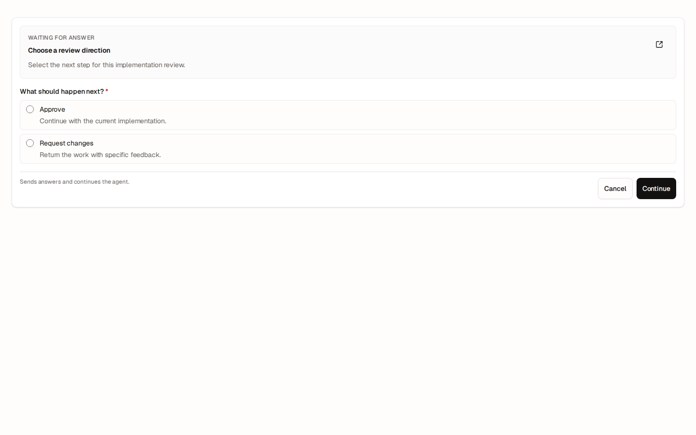
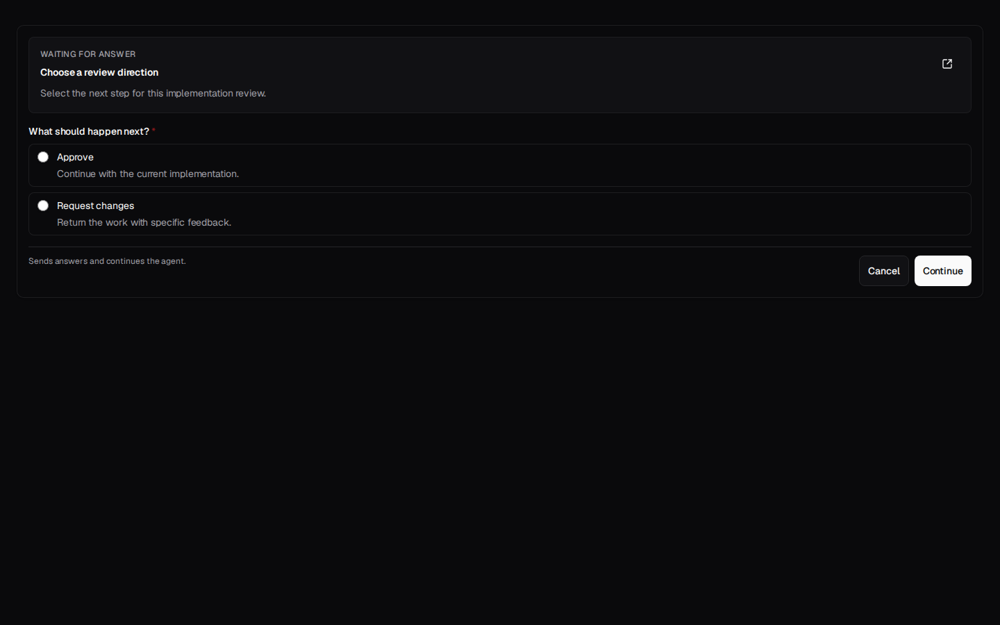
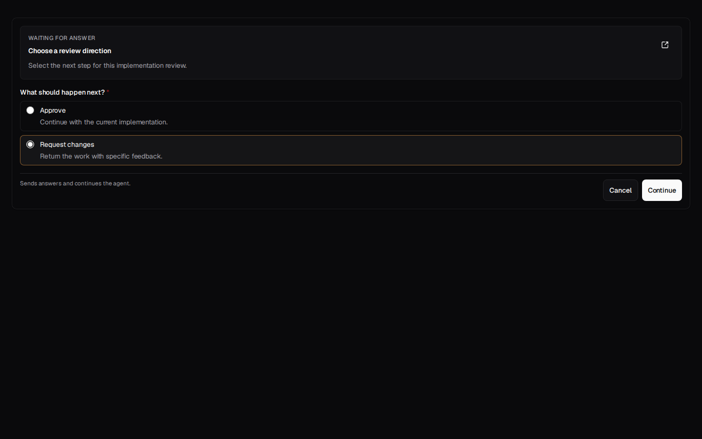
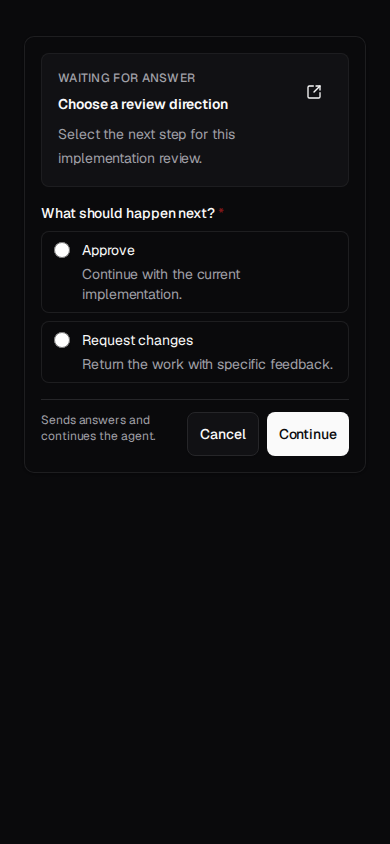
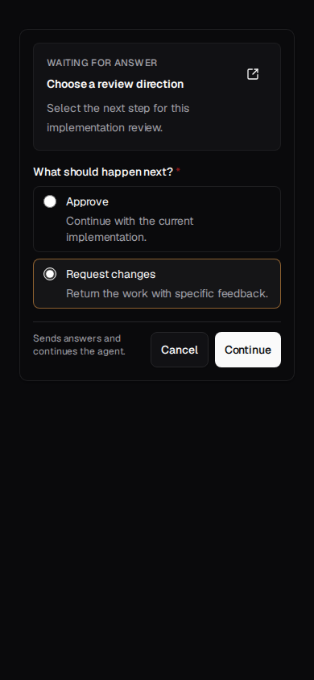

candidate · pending-lightdesktop · 1440×900Known Playwright checkpointask-user-inline-contrast-final:ask-user-inline:candidate:desktop:pending-light:d531680b52ab

candidate · pendingdesktop · 1440×900Known Playwright checkpointask-user-inline-contrast-final:ask-user-inline:candidate:desktop:pending:26fa49a861e3

candidate · selecteddesktop · 1440×900Known Playwright checkpointask-user-inline-contrast-final:ask-user-inline:candidate:desktop:selected:830db47b7f08
candidate · resolveddesktop · 1440×900Known Playwright checkpointask-user-inline-contrast-final:ask-user-inline:candidate:desktop:resolved:c0869b79b29b

candidate · pendingmobile · 390×844Known Playwright checkpointask-user-inline-contrast-final:ask-user-inline:candidate:mobile:pending:bd968fef2695

candidate · selectedmobile · 390×844Known Playwright checkpointask-user-inline-contrast-final:ask-user-inline:candidate:mobile:selected:32be0325ad15
candidate · resolvedmobile · 390×844Known Playwright checkpointask-user-inline-contrast-final:ask-user-inline:candidate:mobile:resolved:61d40d1adff6